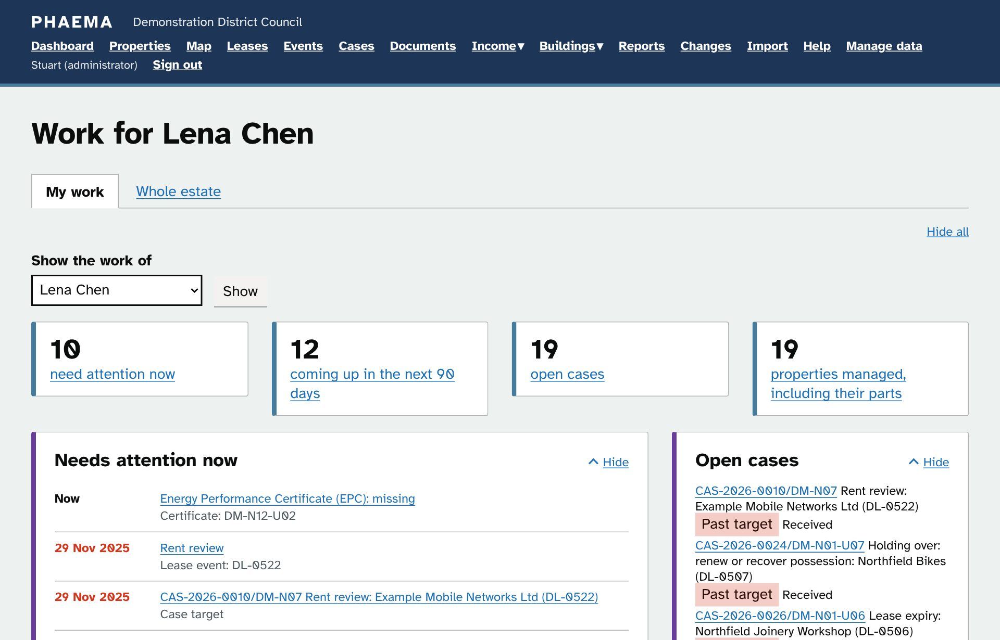
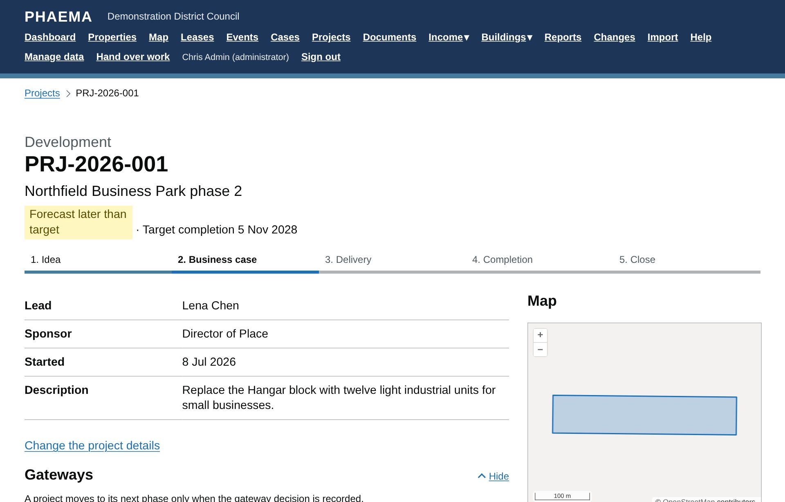
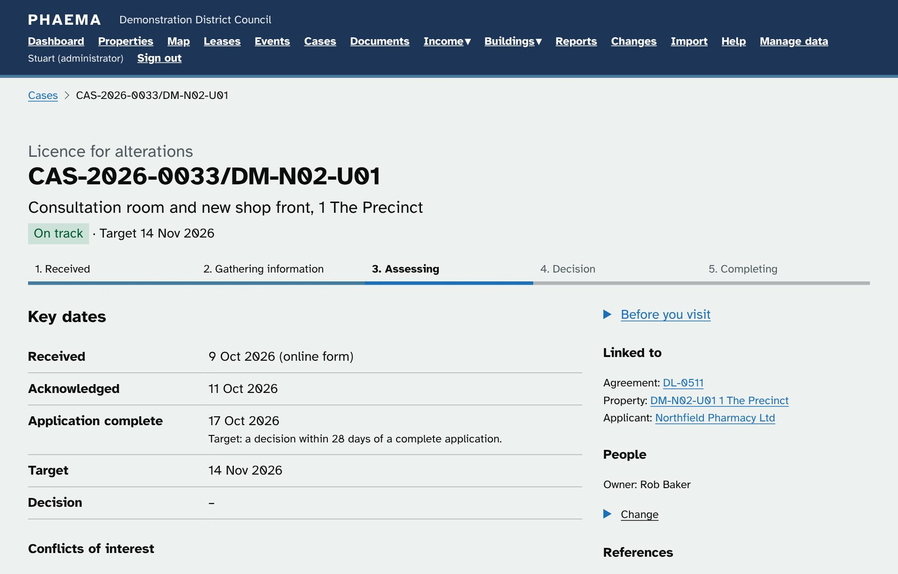
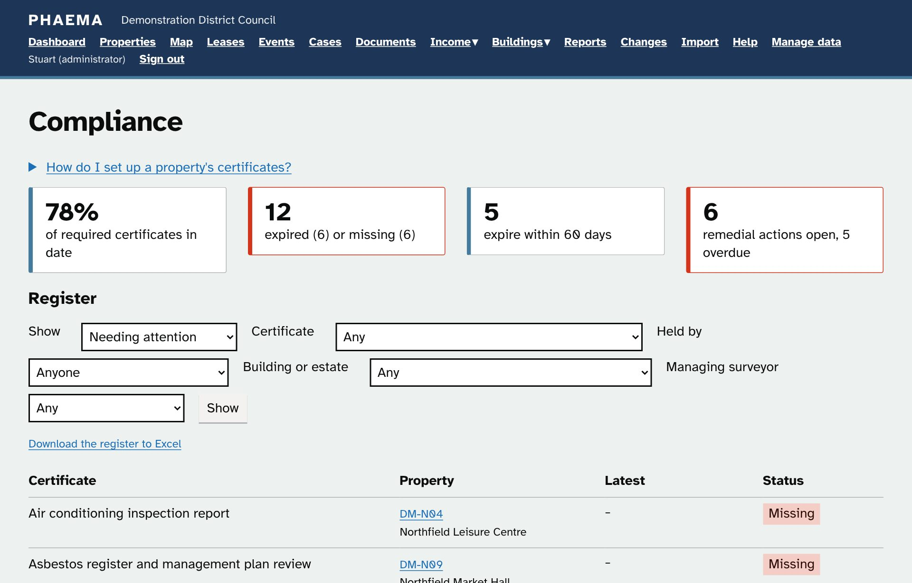
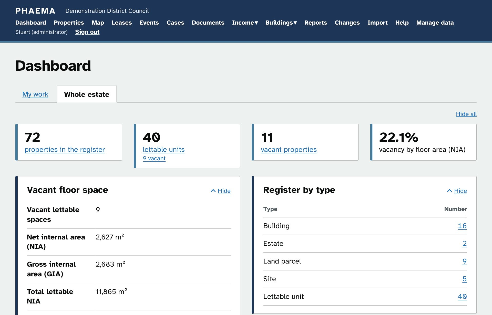

Property register
Estates, sites, buildings and units in a tree, with UPRN and USRN, floor areas to the RICS measurement codes, titles, photos, disposals and a map drawn from Land Registry INSPIRE parcels.
Open-source Property Holdings and Estate Management Application for councils in England and Wales
PHAEMA (Property Holding and Estate Management Application) covers a council's property register, leases, casework, projects, rents, service charges, repairs, compliance and asset valuations in one system. It is free, open source and being developed in public. Councils, surveyors and developers are invited to try it and help shape it.
Alpha In testing, November 2026. Not yet ready for live estate management.

All twelve modules are built and documented, with about 240 automated tests, a user manual, a technical manual and e-learning for five roles. The next step is testing by council staff and a public test site. After that come connectors to the systems councils already use.
No licence fee, ever. Councils can run it themselves or have any supplier host it.
Covering all day-to-day aspects of estate and asset management in the public sector, and ensuring compliance: heads of terms to the RICS leasing code, 1954 Act notice dates, service charges to the RICS 2nd edition, Red Book valuation records and Golden Thread building information.
Built on the GOV.UK Design System and aiming for WCAG 2.2 AA, with dark, high-contrast and large-text settings.
The optional modules (rents, service charges, maintenance, compliance and valuation) can each be switched on when a council is ready, or left to the systems it already has.
Estates, sites, buildings and units in a tree, with UPRN and USRN, floor areas to the RICS measurement codes, titles, photos, disposals and a map drawn from Land Registry INSPIRE parcels.
Leases, licences and wayleaves, let out or held. Rent reviews, breaks, expiries and notice deadlines become events with email reminders and a calendar feed.
Consents, renewals, dilapidations and enquiries with stages, tasks and statutory target dates. Supervisors approve decisions, with conflicts of interest declared first.
Developments, acquisitions, disposals and programmes taken through four gateways, with milestones, a budget by financial year, risks and a checklist of the register changes completion needs.
Thirty letter and notice templates, from consent letters to section 25 notice particulars, filled in from the case and downloaded to Word. Councils can adapt them and add their own.
Demand runs, VAT, credit notes, receipts imported from finance, aged arrears and an export file for the finance system.
Budgets, apportionment by floor area with caps, actual costs and year-end reconciliation on the RICS service charge timetable.
Repairs with target dates, who pays under the lease, works orders and their approval, recharges, planned maintenance and component lifecycles.
Fire, gas, electrical, water, asbestos, lift and EPC certificates with remedial actions, Golden Thread information and site hazards shown before every visit.
The rolling valuation programme, internal or external valuers, Red Book records, impairment prompts and the year-end schedule for finance.
Four roles, access areas that decide who sees each module, supervision chains, cover for absence and a hand-over of a leaver's work in one step.
Ready-made and custom reports to Excel and CSV, the Transparency Code land and assets list, an open API and a change log of every edit.




Screenshots show fictional demonstration data.
Councils already pay, separately, for estates systems that do much the same job. Open source lets them pay once, together, and own the result.
Any council can download and run PHAEMA. Money goes on hosting, support and improvements that every council then shares.
Data sits in an open PostgreSQL database with exports to CSV, Excel and GeoJSON. Any supplier, or the council's own IT team, can host and support it, so changing supplier does not mean changing system.
Every line of code can be read, tested and security-reviewed by the council or anyone it trusts. Nothing is hidden behind a vendor's contract.
When one council pays for a feature, every council gets it. Improvements come back to the shared code under the AGPL licence, so nobody can take it private.
The Technology Code of Practice asks the public sector to be open, use open standards and make code reusable. PHAEMA is built on the GOV.UK Design System and aims for WCAG 2.2 AA.
Councils choose where PHAEMA runs: their own servers or UK or EU hosting. Planned connectors use open standards, so they work with Microsoft 365 or with open-source alternatives.
PHAEMA is licensed under the GNU Affero General Public License v3.0. Anyone may use, study, change and share it. Anyone who runs a changed version as an online service must publish their changes under the same licence, which keeps every improvement available to all councils.
What is built, what is being tested now, and what comes next. Councils taking part help decide the order.
Connectors will be one optional module, off by default and built on open standards, so the same connector works with Microsoft 365 or with open-source alternatives such as Nextcloud, Matrix and Keycloak.
Everything you need to try PHAEMA, learn it, test it or run it.
A self-running, clickable tour of every part of PHAEMA, for a first look or a screen at an event.
Try PHAEMA with fictional data: a council estate, leases, cases and projects to explore. Request a sign-in on the site; the data is reset every 48 hours.
Interactive courses for surveyors, finance, maintenance, administrators and viewers, using the real screens.
How to do each task in PHAEMA, with worked examples from the demonstration data.
The same help that appears inside PHAEMA, readable on GitHub.
Architecture, frameworks, data model, security, hosting and how to extend PHAEMA.
The tests council staff run before go-live, with expected results to record.
The full application under the AGPL, with its automated tests and installation scripts.
What is built, what is being tested and what comes next.
The market review behind the connectors plan, including open-source GIS and Microsoft 365 alternatives.
You need Docker (or Colima on a Mac) and Git. Mac users can follow the Mac setup guide.
git clone https://github.com/phaema/phaema-app.git
cd phaema-app
./phaema.sh start
./phaema.sh admin # create your sign-inPHAEMA is built by a chartered surveyor with a very small team. Every tester, reviewer and contributor makes it better for every council.
Try the test site, run parts of the test programme with your own staff, and tell us what your estates team needs. Councils that pilot PHAEMA shape what is built next.
Check that the processes match how you work: rent reviews, the 1954 Act, service charges, valuations and casework. Practical corrections from practitioners are the most valuable contribution of all.
Pick up an issue, fix a bug or build a connector. PHAEMA is Django and PostGIS with an automated test suite; contributions are signed off under the Developer Certificate of Origin.
Help shape the map layers, OS and EPC lookups and open data output so PHAEMA fits the systems you already run.
Host and support PHAEMA for councils. The code is free for you to use; the AGPL asks only that your improvements are shared.
Email stuart@phaema.co.uk with questions, ideas or offers of help, or raise an issue on GitHub. Councils interested in a pilot are especially welcome to get in touch.